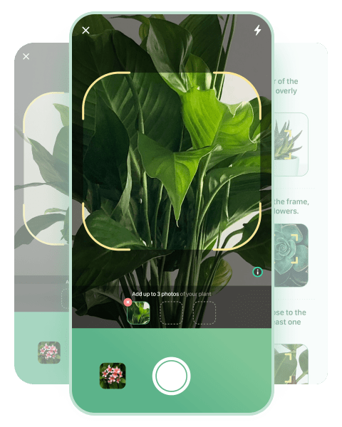
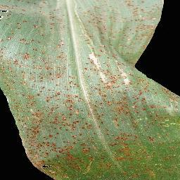
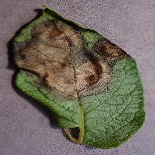

Identify and cure plant diseases with Bloom
Wanna Treat your Plant???
Try the Bloom app to identify the
cause and get identity of
disease and care
info in a snap.
in your pocket from now
Transform your phone into a plant health expert! Snap a photo, and our Deep Learning-powered tool instantly diagnoses plant diseases, estimates severity, and provides personalized care solutions. Keeping your plants happy and healthy has never been this effortless!
Start diagnosing




How to Identify disease with Bloom
- Open Bloom Application and Tap on Camera button in Disease-Id
- Place your effected or sick Plant leaf under the camera frame.
- Snap the different photos of the leafs on the diseased or suspicious Plant
- That's it!!! You will get the output (Disease and cure of it ) on the screen
- Download the pdf and cure the plant
Frequently Asked Questions
How does Bloom identify plant diseases?
Bloom uses a CNN model to recognize the disease your plant
has. Our database contains 38 classes of diseases, such as
Leaf Scortch, LateBlight, Bacterial and many more...
Will more plant species or diseases be added?
Yes, the application can be updated with additional plant
species and diseases as new datasets become available.Feel
free to contact us through sources provided in this page if
any new disease other than the dataset are found or available
so that in further updates it will be added to the application
Is the application free to use?
Yes,This application is offered as a free service to empower
farmers, researchers, and plant enthusiasts. We aim to ensure
a seamless user experience, enabling accurate disease
detection and severity estimation without financial barriers.
Does the application provide treatment suggestions?
Currently, the application focuses on disease detection and
severity estimation. While treatment advice is not included at
the moment, we are actively working on developing a treatment
suggestion system and aim to launch it in future updates once
it’s accurate and successful.